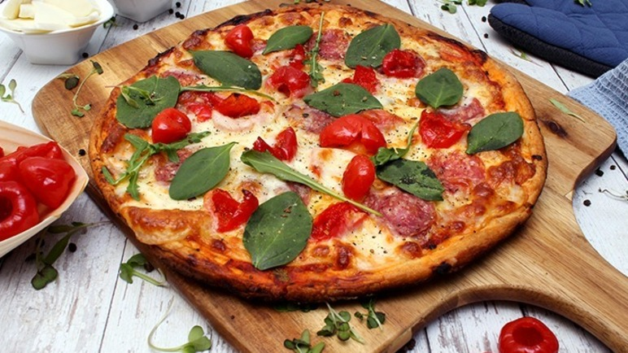

Description
Pepperoni is an American variety of spicy salami made from cured pork
and beef seasoned with paprika or other chili pepper. Prior to cooking,
pepperoni is characteristically soft, slightly smoky, and bright red in
color. Thinly sliced pepperoni is one of the most popular pizza toppings
in American pizzerias.
ingredients
- 31 grams Peppadew® Sweet Piquanté Peppers Mild Whole
- 265 grams Sainsbury's Thin & Crispy Cheese & Tomato Pizza 10''
- 82 grams Sainsbury's Mozzarella Cheese Basics
- 17 grams Sainsbury's Italian Pepperoni
- 4 grams Sainsbury's Baby Leaf Spinach
- 1 gram Sainsbury's Wild Rocket
Cooking Steps
-
Place torn pieces of mozzarella on the 10'' Thin & Crispy Cheese &
Tomato Pizza base and top with Italian pepperoni & quartered PEPPADEW®
Sweet Piquanté Peppers
-
Bake for 20 minutes at 180°C
-
Remove from oven and top with Baby Leaf Spinach & Wild Rocket
Return to top
Return to main page